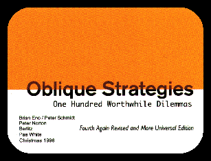
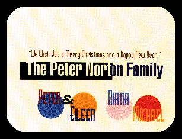
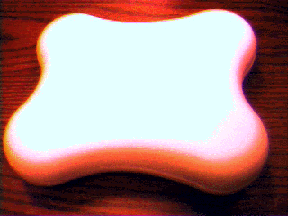

|
 |

As mentioned in Brian Eno's published diary, a fourth edition of the
Oblique Strategies was produced in 1996. Unlike the 1975, 1978, and 1979
editions of the decks, this version was not commercially available; it was
a project undertaken by Peter Norton and his family in conjunction with
Brian Eno and published in a limited edition of 4,000 distributed to Peter
Norton's close friends and colleagues. Since the fourth edition of the Oblique
Strategies was a private edition and a gift, no copies of this deck are available.
In keeping with the objectives of the Oblique Strategies Web Pages, these
pages detail not only the contents of the fourth edition, but their genesis
and form (which is entirely appropriate, since this fourth edition is quite
a different sort of object from the first three editions of the decks).
I am indebted to Peter Norton for both his generousity in providing me with
access to a deck of this new edition and for his kindness in providing the
story of the 1996 edition of the Oblique Strategies in his own words.
- My wife and I are active in the world of contemporary art, and some
time ago we became embarrassed at the idea of sending out traditional commercial
cards at Christmastime when we had so many artists as friends. So we began
commissioning original Christmas greetings, which we send out to our closest
friends and colleagues.
-

-
- We'd long had a few copies of the "third again revised" edition
of Oblique Strategies and liked it a lot. We were casual friends with Brian
Eno, his wife Anthea, and their daughters, so I contacted Brian to see
if we could publish a new edition for Christmas 1996.
-
- He quickly agreed and began working at revising the set. The incidental
story of that effort you can find scattered through Brian's published diary.
-
-
Note: A list of the "new" Oblique Strategies which appear in the diary
can be found here.
-
- Brian concentrated on two things: First, the usual business of adding,
subtracting, and refining the Strategies that has gone on with each previous
revision. And second, broadening the focus of the Strategies, so that they
were less about music and painting, and more about universal creative challenges.
- After some months Brian sent me the results, one hundred and six dilemmas
along with notes on others; and he encouraged me to play with them, to
do my own revising. I took to that with relish. I pared them down to an
even one hundred and polished the way they were expressed: making them
more poetic, if I could, and changing the flavor of the words from the
British dialect to the American.
-
- But I wanted to do more. To add some special value to this edition.
I was struck by Brian's efforts to point them away from music and painting,
towards the universal. I picked that up as a theme and decided to make
this set more universally accessible, to more than the English-speaking
world. After a little research, I discovered that the half- dozen most
widely spoken languages, together, were known to more than half of the
world's population. (It's interesting to try to guess what these languages
are; the mistakes in our guessing tell us a lot about our cultural and
geographic myopia. The top half-dozen languages: Mandarin Chinese, English,
Hindi, Spanish, Russian and Arabic. Among people I've talked to, most of
their missed guesses appear in the second half-dozen: Japanese, French,
German, Portuguese, Bengali, and Malay. Score six for Europe, five for
Asia -- including two in India; and Malay which almost no Westerner would
guess -- and one for Arabia. None for highly balkanized Africa.)
-
- So I set about to make this not only the "fourth again revised
edition" (as Brian would put it) but also a "more universal"
edition. I hired Berlitz to do the translations, giving them unusual instructions:
to be free, lyrical, and poetic; a refreshing change for Berlitz's team,
who are accustomed to the dreary work of precisely translating technical
manuals and the like.
-
- You don't have to be able to read these translations to see some of
the freedom the Berlitz translators exercised: In the Hindi translation
some questions became statements and some statements became questions.
The one-word strategy "Water" has a one-word translation in everything
but Spanish, where it became the evocative "Elementalmente ... Agua".
-
- I expected that my bright idea -- of a "universal" rendering
in the most widely spoken languages -- would be the key feature of this
edition. But I was mistaken.
-
- Once we had the text of the "fourth again revised and more universal
edition" we needed to determine the form. First I thought we would
find an exotic material to make the cards out of. In this age where striking
new materials appear almost daily, I expected we would find something amazing
-- a card stock that was transparent on one side, opaque on the other,
or something equally fantastic. But we found nothing suitable.
-
- So we turned to design, per se, to make the form of the cards interesting.
One of our artist friends, Pae White, also worked as a graphic designer
and we engaged her to give the deck a new form.
-
- And she did.
-
- Following the principles of contemporary design (roughly stated: violate
all the classic principles of design) Pae made a deck that was wild, noisy,
narcissistic, self- referential, illegible, smart and stupid by turns.
And designed a container for the deck of cool, white, marble- like plastic,
Dupont Corian, in the shape of an abstract dog bone.
-

-
- This was a design so high-profile that it called all attention to itself
(another contemporary design principle) and left Brian's words and Berlitz's
languages in the background. But it was magnificent.
-
- And this became the 1996 "fourth again revised and more universal
edition" of the Oblique Strategies.
-
- This edition, in its own private world, became widely acclaimed --
spreading further the reputation and glory of the Oblique Strategies.
-
While the Oblique Stratigraphy section of this site should give you a
pretty good idea of how the Strategies were altered and added to for the
limited edition 1996 version, you really need to see what the edition four
cards look like to get a full sense of what Pae White did with the cards.
It's simply not possible at this time for me to scan in an entire facsimile
of the fourth edition cards, but I have chosen a number of them (by drawing
them at random, of course) and reproduced them for your edification. You
can take a look at a sample of cards from the edition four Oblique Strategies
by clicking here.
|